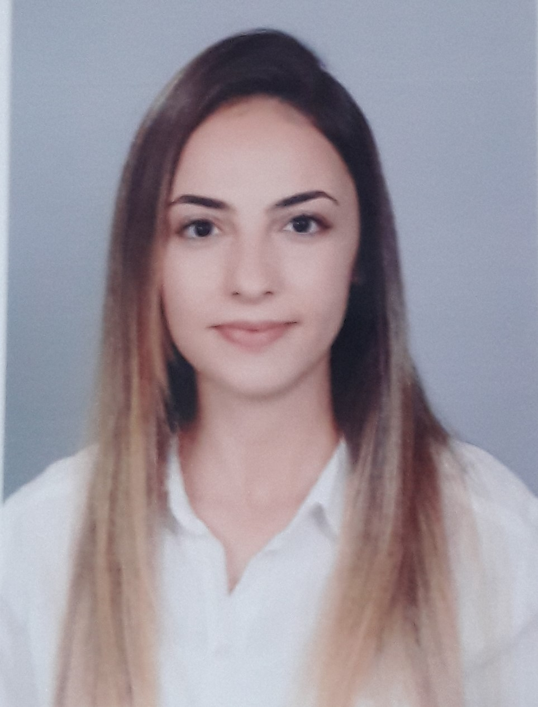

Gizem CAN
Geomatics Engineer

Summary 
I am Gizem Can, a 26-year-old engineer based in Ankara, Turkey.
I am an engineer and also a research assistant who is eager to learn
new information in every field. I am confident in teamwork and I think that
I will provide different visions and contributions to my colleagues and the company.
Education 
- M.Sc. in Soil Science and Plant Nutrition Faculty of Agriculture - Ankara University (Nov 2023 – Ongoing)
- M.Sc. in Geomatics Engineering Faculty of Engineering - Hacettepe University (Sept 2022 – Nov 2023)
- B.Sc. in Geomatics Engineering Faculty of Engineering - Hacettepe University (Sept 2016 – June 2021)
Work Experience 
Research Assistant / Soil Science and Plant Nutrition Faculty of Agriculture - Ankara University
Mar 2024 - Ongoing
- Spatial and temporal evaluations of vegetation cover productivity are conducted using Geographic Information Systems (GIS) and Remote Sensing techniques to monitor land cover changes
- Visualizaiton of soil, topography, vegetation cover, and soil conservation practices with GIS.
Project Managament Specialist / Netcad & AFAD
Aug 2023 – Jan 2024
- I am involved in the management of the Spatial Web Project carried out in cooperation with AFAD.
- As a result of this project, disaster residences were built for disaster victims and their grievances were alleviated. It is a large project in which spatial data of disaster victims and earthquake zones are stored and managed.
Engineer Intern /General Directorate of Land Registry and Cadastre
July 2020 – Aug 2020
- Training in Geodesy, Photogrammetry, Flight unit, Map Production units.
- Actively used the Pix4D program and GPS.
Engineer Intern / GeoGIS A.Ş
Aug 2019 – Sep 2019
- Highway project was carried with ARCGIS program. Analysis of Green Area Detection and Number of tree, Traffic accident hotspot locations web map is done.
Skills 
- PostgreSQL ⭐️⭐️⭐️⭐️
- Python ⭐️⭐️⭐️⭐️
- Java⭐️⭐️
- Android Studio ⭐️⭐️
- Microsoft Office Suite⭐️⭐️⭐️⭐️⭐️
- QGIS/ArcGIS ⭐️⭐️⭐️⭐️
- HTML/CSS/JS ⭐️⭐️⭐️⭐️
Award and Certifications 
- Udemy The Complete 2024 Web Development Bootcamp
- Advanced SQL Certificate of Completion(2023)
- UPSCHOOL-Prep Class Program SQL
- PATİKA Academy SQL Program
- UDACITY SQL for Data Analysis Program
- KAGGLE Intro to SQL Certificate of Completion (2023)
- Web Based Geographic Information Systems Participation Certificate (2022) BTK Academy
- UpSchool Android Development
- HERE Map Creator Contribution Certificate (2019)
- Netcad 7.7 GIS Basic Training Program (2018)
- Yaşamarti Personal Development Summit (2018)
Others